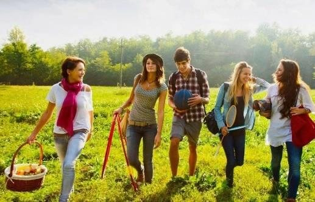

Шесть коротких записей по всем четырём заданиям устной части. Преподаватель послушает их и поймёт, с чего начинать работу. Это диагностика, а не экзамен: говорите так, как получается.
| Блок | Что делать | Время записи |
|---|---|---|
| Задание 1 · 1a | Прочитать слова, числа, годы, имена | до 4 мин |
| Задание 1 · 1b | Прочитать 15 предложений с интонацией | до 3 мин |
| Задание 2 | Задать 15 прямых вопросов | до 5 мин |
| Задание 3 | Интервью: 15 вопросов от носителя, 40 с на ответ | 13 мин |
| Задание 4 · 4a/4b | Ответить на вопросы по 6 фото | до 5 мин |
| Задание 4 · 4c/4d | Монолог по 2 фото | 3 мин |
Прочитайте вслух все слова, числа, годы и имена по порядку. Это слова, на которых чаще всего ошибаются в задании 1.
Нажмите «Начать»: минута на то, чтобы просмотреть список, затем запись до 4 минут. Закончили раньше — нажмите «Стоп».
Отметьте то, что получилось. Неотмеченные пункты преподаватель увидит как зоны роста.
| 1. Tricky sounds | |
| heat | /hiːt/ |
| zero | /ˈzɪə.rəʊ/ |
| plants | /plɑːnts/ |
| gases | /ˈɡæs.ɪz/ |
| lose | /luːz/ |
| other | /ˈʌð.ər/ |
| cause | /kɔːz/ |
| purpose | /ˈpɜː.pəs/ |
| lead | /liːd/ (глагол), /led/ (металл) |
| further | /ˈfɜː.ðər/ |
| timber | /ˈtɪm.bər/ |
| rare | /reər/ |
| company | /ˈkʌm.pə.ni/ |
| accident | /ˈæk.sɪ.dənt/ |
| though | /ðəʊ/ |
| through | /θruː/ |
| pattern | /ˈpæt.ən/ |
| typical | /ˈtɪp.ɪ.kəl/ |
| enough | /ɪˈnʌf/ |
| neither | /ˈnaɪ.ðər/ или /ˈniː.ðər/ |
| creature | /ˈkriː.tʃər/ |
| unique | /juːˈniːk/ |
| fuel | /ˈfjuː.əl/ |
| catalogue | /ˈkæt.ə.lɒɡ/ |
| increase | /ɪnˈkriːs/ (глагол), /ˈɪn.kriːs/ (сущ.) |
| determine | /dɪˈtɜː.mɪn/ |
| unusual | /ʌnˈjuː.ʒu.əl/ |
| identified | /aɪˈden.tɪ.faɪd/ |
| anxiety | /æŋˈzaɪ.ə.ti/ |
| construction | /kənˈstrʌk.ʃən/ |
| 2. Word stress | |
| even | /ˈiː.vən/ |
| almost | /ˈɔːl.məʊst/ |
| percent | /pəˈsent/ |
| effects | /ɪˈfekts/ |
| aspects | /ˈæs.pekts/ |
| industry | /ˈɪn.də.stri/ |
| footprint | /ˈfʊt.prɪnt/ |
| purchase | /ˈpɜː.tʃəs/ |
| symptoms | /ˈsɪmp.təmz/ |
| developed | /dɪˈvel.əpt/ |
| converted | /kənˈvɜː.tɪd/ |
| capacity | /kəˈpæs.ə.ti/ |
| economy | /ɪˈkɒn.ə.mi/ |
| significant | /sɪɡˈnɪf.ɪ.kənt/ |
| discomfort | /dɪsˈkʌm.fət/ |
| accelerate | /əkˈsel.ə.reɪt/ |
| conservation | /ˌkɒn.səˈveɪ.ʃən/ |
| flexibility | /ˌflek.səˈbɪl.ə.ti/ |
| satellite | /ˈsæt.ə.laɪt/ |
| advertisement | /ədˈvɜː.tɪs.mənt/ (брит.) |
| 3. Silent letters | |
| climb | /klaɪm/ |
| knife | /naɪf/ |
| sign | /saɪn/ |
| answer | /ˈɑːn.sər/ |
| would | /wʊd/ |
| island | /ˈaɪ.lənd/ |
| walking | /ˈwɔː.kɪŋ/ |
| enough | /ɪˈnʌf/ |
| knock | /nɒk/ |
| designer | /dɪˈzaɪ.nər/ |
| foreigner | /ˈfɒr.ə.nər/ |
| mechanic | /məˈkæn.ɪk/ |
| knight | /naɪt/ |
| doubtful | /ˈdaʊt.fəl/ |
| sword | /sɔːd/ |
| receipt | /rɪˈsiːt/ |
| debt | /det/ |
| character | /ˈkær.ək.tər/ |
| subtle | /ˈsʌt.əl/ |
| hustle | /ˈhʌs.əl/ |
| 4. Numbers | |
| 304 | three hundred and four |
| 14 | fourteen |
| 40 | forty |
| 19 | nineteen |
| 90 | ninety |
| 2004 | two thousand and four |
| 1234 | one thousand two hundred and thirty-four |
| 789 000 | seven hundred and eighty-nine thousand |
| 5. Years | |
| 1961 | nineteen sixty-one |
| 1147 | eleven forty-seven |
| 1999 | nineteen ninety-nine |
| 2001 | two thousand and one |
| 2012 | twenty twelve / two thousand and twelve |
| 2017 | twenty seventeen |
| 2030 | twenty thirty / two thousand and thirty |
| 6. Proper names | |
| the Earth | /ði ɜːθ/ |
| Europe | /ˈjʊə.rəp/ |
| Australia | /ɒsˈtreɪ.li.ə/ |
| the Mediterranean | /ðə ˌmed.ɪ.tərˈeɪ.ni.ən/ |
| the Pacific Ocean | /ðə pəˈsɪf.ɪk ˈəʊ.ʃən/ |
| the Arctic Ocean | /ði ˈɑːk.tɪk ˈəʊ.ʃən/ |
| Saint Petersburg | /sənt ˈpiː.tə.bɜːɡ/ |
| Karelia | /kəˈreɪ.li.ə/ |
| Thames | /temz/ |
| Shakespeare | /ˈʃeɪk.spɪər/ |
| Edinburgh | /ˈed.ɪn.bər.ə/ |
| Hermitage | /ˈhɜː.mɪ.tɪdʒ/ |
| Siberia | /saɪˈbɪə.ri.ə/ |
| Lake Onega | /ˈleɪk əʊˈneɪ.ɡə/ |
| the Far East | /ðə ˌfɑːr ˈiːst/ |
🔊 — синтезированное произношение браузера (британский вариант, если он есть на устройстве).
Прочитайте предложения, обращая внимание на паузы и интонацию: вводные слова, обстоятельства в начале, перечисления, условные предложения.
Минута на подготовку, затем запись до 3 минут.
Отметьте то, что получилось. Неотмеченные пункты преподаватель увидит как зоны роста.
| № | Предложение | Интонационная разметка |
|---|---|---|
| 1 | In recent years, learning English online has become very popular. | Обстоятельство времени → пауза, затем понижение |
| 2 | However, traditional lessons with a teacher still have many advantages. | Вводное слово → пауза, контрастное ударение |
| 3 | Not only does sport make you strong, but it also helps you feel happy. | Инверсия, противопоставление → логическое ударение |
| 4 | According to recent studies, teenagers spend about four hours a day on their phones. | Вводное словосочетание → пауза |
| 5 | To stay healthy, doctors recommend eating fruit and doing sports. | Обстоятельство цели → пауза; перечисление → повышение |
| 6 | Many people believe that success depends on hard work, patience, and a bit of luck. | Перечисление → повышение на каждом элементе, понижение на последнем |
| 7 | If we cut down forests, many species of animals and birds will lose their homes. | Условное придаточное → повышение, главное → понижение |
| 8 | As soon as the sun goes down, the city lights turn on and the streets become bright. | Придаточное времени → повышение, главное → понижение |
| 9 | In spring, when the weather gets warmer, birds return from the south and build their nests. | Обстоятельство времени → пауза; перечисление → повышение |
| 10 | In conclusion, I strongly believe that knowledge is the key to a good career. | Вводное слово → пауза |
| 11 | Unfortunately, climate change is a big problem for our planet today. | Вводное слово → пауза |
| 12 | Among the most useful animals on Earth are bees, which help plants grow and give us honey. | Инверсия → пауза; перечисление → повышение |
| 13 | If you want to pass your exams, you must study hard and never give up. | Придаточное условия → повышение, главное → понижение |
| 14 | The Internet has changed the way we talk, find information, and buy things. | Перечисление → повышение, понижение на последнем |
| 15 | As the temperature goes up, many insects appear earlier, damaging plants and crops. | Обстоятельство времени → пауза; перечисление → повышение |
You are considering joining an English language course at a local school and now you'd like to get more information. Ask fifteen direct questions to find out the following:
Полторы минуты на подготовку, затем задайте все 15 вопросов вслух (запись до 5 минут).
Необязательно, но полезно: преподаватель увидит и устный, и письменный вариант. Затем откройте образцы и сравните.
Отметьте то, что получилось. Неотмеченные пункты преподаватель увидит как зоны роста.
Interviewer: Hello everybody! It's Teenagers Round the World Channel. Our guest today is a teenager from Russia and we are going to discuss teenagers' attitude to school and plans for the future. We'd like to know our guest's point of view on this issue. Please answer fifteen questions.
Вопросы задаёт носитель языка, после каждого — 40 секунд на ответ, как на экзамене. Выберите уровень поддержки:
Нажмите «Начать»: включится аудио с вопросами, и сразу пойдёт запись. Отвечайте в паузах. Запись остановится сама после последнего вопроса.
Отметьте то, что получилось. Неотмеченные пункты преподаватель увидит как зоны роста.
Посмотрите на фото и ответьте на вопросы. Выберите вариант:

Минута на подготовку, затем ответьте на все 6 вопросов по порядку (запись до 5 минут).
Отметьте то, что получилось. Неотмеченные пункты преподаватель увидит как зоны роста.
Imagine that you and your friend are doing a school project “Summer holidays”. You have found some photos to illustrate it but for technical reasons you cannot send them now. Leave a voice message to your friend explaining your choice of the photos and sharing some ideas about the project. In 2.5 minutes be ready to:
You will speak for not more than 3 minutes (12–15 sentences). You have to talk continuously.
| Пункт плана | Опорная лексика |
|---|---|
| Описание: фото 1 | a group of teenagers walking in the countryside / to carry a picnic basket / to hold a badminton racket and a ball / sunny weather / bright blue sky / green grass / to laugh and chat / to spend time with friends / outdoor activity / active and social / to enjoy nature |
| Описание: фото 2 | a young woman reading a book / lying on a sofa at home / cosy atmosphere / to enjoy her free time / relaxed / to spend time alone / to be focused on the story / no electronic devices |
| Различия | reading alone at home vs spending time outdoors with friends / indoor vs outdoor activity / individual vs group activity / quiet vs energetic / passive relaxation vs active leisure |
| Преимущества: пикник | healthy and active / fresh air and sunshine / opportunity to socialise and make friends / fun and exciting / to combine with sports (badminton, football) / connects with nature / to create lasting memories / no screens |
| Преимущества: чтение дома | to improve concentration and imagination / to reduce stress / no eye strain from screen / can be done anywhere / to develop vocabulary and thinking / relaxing and calming / to expand horizons / cheap or free (if from library) |
| Недостатки: пикник | to depend on weather / to require planning and preparation / can be physically tiring / risk of insect bites or sunburn / may be expensive (food, transport) / to take more time |
| Недостатки: чтение дома | can be boring for some people / not interactive / limited to text and images / no sound or video / no social interaction |
| Что я предпочитаю | I prefer reading at home because: to relax without screens / to enjoy a quiet evening / to spend time alone / to enjoy the comfort of home. — I prefer going on a picnic because: to spend time with friends / to enjoy fresh air and nature / to stay active / to have fun outdoors / to escape from daily routine / to combine sports and food |
2.5 минуты на подготовку, затем монолог до 3 минут — как на экзамене.
Отметьте то, что получилось. Неотмеченные пункты преподаватель увидит как зоны роста.
Hi! I've found two photos for our project "Summer Holidays". The first photo shows a group of teenagers walking in the countryside. They are carrying a picnic basket and holding badminton rackets. The weather is sunny and they look happy and active. The second photo shows a girl reading a book at home. She is lying on a sofa, and the atmosphere looks calm and relaxing.
The main difference between the two photos is that the first one is an outdoor group activity, while the second one is an indoor individual activity. The first photo is about active leisure, while the second one is about quiet relaxation.
The advantages of going on a picnic are that you can spend time outdoors, enjoy fresh air, and socialise with friends. It's also healthy because you walk and play sports. The advantages of reading at home are that it's relaxing, improves concentration, and there are no screens.
However, going on a picnic depends on good weather and takes time to prepare. Reading at home can be boring for some people and you don't interact with anyone.
Personally, I'd prefer going on a picnic because I enjoy being outdoors and spending time with friends. It's a great way to create memories and escape from everyday routine.
Let me know your opinion about the photos.
Какие блоки уже у преподавателя. Неотправленный блок можно открыть, записать и отправить в любой момент.
Сводка — без аудио: какие блоки сделаны, какой уровень поддержки выбран и что отмечено в самопроверке.